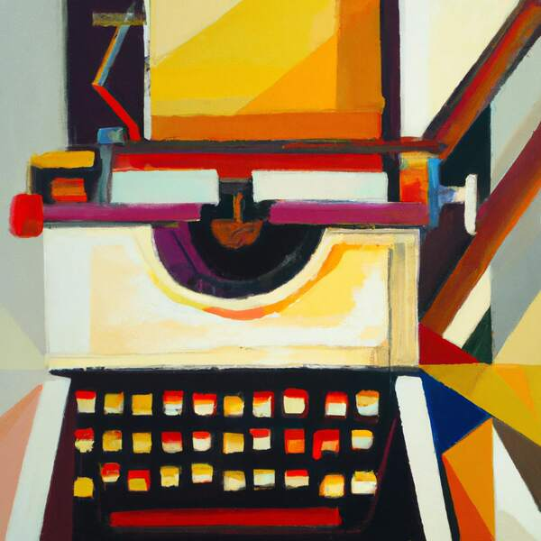

Smart tools for smart writers [es]

Mi resumen personal de la cuestión, en texto simple, después del encuentro. Gracias nuevamente a @xbelanch por darme la ocasión de compartir, debatir y continuar aprendiendo.
Definición del problema
- Seguimos utilizando procesadores de textos del siglo pasado, pensados para el papel y con la hoja de papel com a unidad lógica de medida y de destino, cuando la mayoría de los textos que escribimos ya no tienen su punto final en la impresora: los enviamos por correo electrónico, los publicamos en blogs, en revistas electrónicas, en las redes sociales, en entornos virtuales de aprendizaje, etc.
- Los formatos de fichero de los procesadores de textos tradicionales son hijos de esta concepción heredada. Son formatos finalistas: definen lo que hay que imprimir y aspiran al control completo de la página. De este modo, dificultan la inserción de los documentos en otros ciclos de trabajo: publicación web, ebook, etc.1
- Por último, pero no por ello menos importante, la interfaz de usuario de los procesadores de textos tradicionales se ha hecho innecesariamente compleja y confusa.
Propuestas de solución
- El renacimiento del text simple (.txt).
- A la hora de escribir, en el 90% de los casos no necesitamos nada más.
- El texto simple garantiza:
- La máxima compatibilidad entre aplicaciones y entre sistemas operativos.
- La máxima portabilidad entre dispositivos: ordenadores, tabletas, teléfonos…
- La máxima ligereza de los documentos y de las aplicaciones.
- Y sobre todo: ¡la preservación de los documentos!
- Primero la semántica: Markdown (y otros lenguajes de marcas ligeros).
WYSIWYG:What You See Is What You Get(lo que ves es lo que obtienes).- Hoy no sabemos dónde ni cómo se obtendrá el documento: utilizamos una multiplicidad de medios y dispositivos para leer y escribir.
- ¡La autoedición sólo tenía sentido para los documentos que me imprimía yo mismo!
- WYSIWYM: What You See Is What You Mean (lo que ves es lo que quieres decir).
- Itálica y negrita, listas, secciones y encabezados, enlaces, notas al pie…: en el 99% de los casos no necesitamos nada más.
- It’s just text! Markdown mantiene todas las ventajas del texto simple.
- Create Once, Publish Everywhere: exportación a todos los formatos2 necesarios para insertar el documento en los diferentes ecosistemas de edición y publicación.
- Un momento para escribir, otro para editar y otro para publicar. Con los formatos y las aplicaciones correspondientes a cada momento.
- La ola de editores de texto minimalistas.
- Una interfaz limpia, centrada en el texto y enfocada a la escritura.
- Minimización de las distracciones.
| Editores | Mac | Windows | Linux | iOS | Android | Markdown |
|---|---|---|---|---|---|---|
| ByWord | ✓ | ✓ | ✓ | |||
| iA Writer | ✓ | ✓ | ✓ | ✓ | ||
| Writeroom | ✓ | ✓ | ||||
| FocusWriter | ✓ | ✓ | ✓ | |||
| WriteMonkey | ✓ | |||||
| Ommwriter | ✓ | ✓ | ✓ | |||
| Ulysses | ✓ | ✓ | ✓ |
Y hay muchos más. Busquen ‘distraction-free editor’ o ‘markdown editor’ en les app store o en google.
Sincronización
Dropbox es ahora mismo la solución más lograda.
- Sincroniza los documentos entre dispositivos mediante la nube.
- Multiplataforma: Mac, Windows, Linux, iOS, Android…
- Facilita la colaboración mediante carpetas compartidas.
- Guarda copias de seguridad de las versiones anteriores de los documents.
Google Docs/Drive?
- Google Docs nació como una copia online -limitada- de Word y hereda prácticamente todos los defectos de los procesadores de textos tradicionales.
- Docs y Drive implican una cesión de facto de la propiedad de los documentos: no sincronizan los documentos entre dispositivos, sino que los documentos residen en la nube y como mucho podemos bajar copias.
Más allá del minimalismo
¿Y què hay del 1% de los casos en que la complejidad de un proyecto impide gestionarlo cómodamente mediante un editor minimalista y un pequeño número de documentos de texto simple? ¿Tenemos que volver entonces al Word, como el hijo pródigo? La respuesta es no:
- Scrivener, Ulysses, etc.: els procesador de textos para escritores.
- Booki/Booktype: una aplicación web para la edició colaborativa de libros.
-
¿Han intentado alguna vez copiar del Word y pegar en un blog, p. e. Wordpress? ↩
-
HTML, Word, OpenDocument, EPUB, PDF, etc. ↩
 2012-06-06
2012-06-06 4 minuts
4 minuts ️ Compartir
️ Compartir ️ Contestar
️ Contestar